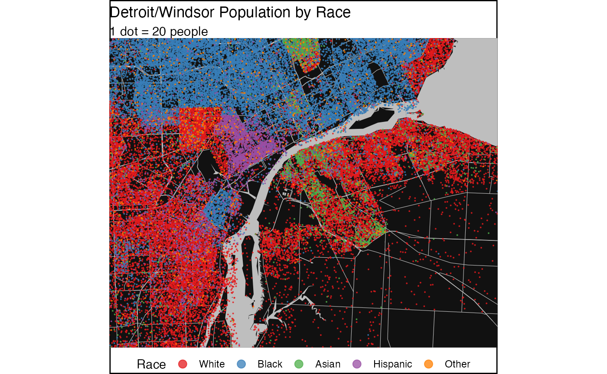

vignettes/why_dotdensity.Rmd
why_dotdensity.RmdMulti-category dot-density maps can be very effective at communicating data. They are intuitive and visually appealing. This package contains two convenience functions that deal with two common problems with multi-category dot-density maps.
When making dot-density maps we need to transform counts for our categories to dots that are suitable for drawing. Often we scale the data so that each dot represents a fixed number of people (or whatever the base category for our map is). We need to take cafe of two pitfalls in this process. Our scaled data doesn’t generally contain integer counts any more but floats that we need to convert to an integer number of dots we want to draw. Naive rounding can lead to systematic bias in the total number of dots for each category. To see this, consider an example where we want to make a dot-density map of mother tongue, and suppose German as a mother tongue is evenly distributed across all census regions. When we scale our data so that 1 dot represents 50 people, naive rounding will round the German speakers alway in the same direction, leading to German speakers getting systematically over- or under-represented. The solution to this problem is to employ random rounding instead of simple rounding.
The other problem concerns the ordering of the dots. It is important that once the data has been transformed into dots that the order of the dots be randomized so that not all dots of a particular colour are drawn last. Otherwise the dots drawn last will be visually over-represented in our map.
The compute_dots method takes care of these two issues
and converts a spatial datframe containing polygon data into a spatial
dataframe containing dots.
The other convenience method concerns the situation where we have
finer information about where in each census region the people are
located. In the Canadian census, block level data gives information
about where in a specific Dissemination Area people are living. The
proportional_reaggregate function will take counts from
higher level census data and proportionally re-aggregate it to block
level. This will result in visually more appealing maps as it
concentrates the dots where people live and will leave other areas, like
parks, empty.
As an example we look at the population in the Detroit-Windsor area
by race. For the data in the Detroit area we use the
tidycensus package to access the US Census Bureau API.
library(tidycensus)
racevars <- c(White = "P005003",
Black = "P005004",
Asian = "P005006",
Hispanic = "P004003")
categories <- c("White","Black","Asian","Hispanic","Other")
detroit <- get_decennial(geography = "tract", variables = racevars,
year= 2010,
state = "MI", county = "Wayne", geometry = TRUE,
summary_var = "P005001",
output="wide") %>%
mutate(Other=summary_value-White-Black-Asian-Hispanic, Name=NAME)
#> Getting data from the 2010 decennial Census
#> Downloading feature geometry from the Census website. To cache shapefiles for use in future sessions, set `options(tigris_use_cache = TRUE)`.
#> Using Census Summary File 1
#>
|
| | 0%
|
|== | 2%
|
|== | 3%
|
|=== | 5%
|
|==== | 5%
|
|===== | 7%
|
|====== | 9%
|
|======= | 10%
|
|======== | 11%
|
|========= | 13%
|
|========== | 14%
|
|=========== | 16%
|
|============= | 18%
|
|=============== | 21%
|
|================= | 24%
|
|=================== | 28%
|
|===================== | 30%
|
|======================= | 33%
|
|========================== | 37%
|
|============================ | 40%
|
|================================= | 47%
|
|========================================= | 59%
|
|================================================ | 69%
|
|======================================================================| 100%For the Windsor data we use cancensus to access the
CensusMapper API. We choose the 2011 census year to match the data from
the 2010 US decentennial census.
library(cancensus)
library(cancensusHelpers)
#> Loading required package: rlang
#>
#> Attaching package: 'rlang'
#> The following objects are masked from 'package:purrr':
#>
#> %@%, as_function, flatten, flatten_chr, flatten_dbl, flatten_int,
#> flatten_lgl, flatten_raw, invoke, splice
#> Loading required package: xml2
#>
#> Attaching package: 'xml2'
#> The following object is masked from 'package:rlang':
#>
#> as_list
region=search_census_regions("Windsor","CA11",level="CMA") %>% as_census_region_list()
#> Querying CensusMapper API for regions data...
variables <- search_census_vectors("Visible minority for the population in private households","CA16","Total") %>% child_census_vectors(leaves_only=TRUE)
#> Warning in search_census_vectors("Visible minority for the population in private
#> households", : search_census_vectors(). See ?find_census_vectors() for more
#> robust search functions.
vectors <- setNames(variables$vector,variables$label)
windsor <- get_census("CA16",regions=region,vectors=vectors,level="DA",geo_format="sf") %>%
mutate(White=`Not a visible minority`+Arab+`West Asian`,
Hispanic=`Latin American`,
Asian=Chinese+Korean+`South Asian`+Filipino+`Southeast Asian`+Japanese,
Other=`Visible minority, n.i.e.`+`Multiple visible minorities`,
Name=`Region Name`) %>%
st_transform(st_crs(detroit))
#> Reading vectors data from local cache.
#> Reading geo data from local cache.We simply combine these two into a common dataframe.
common_categories=intersect(names(detroit),names(windsor))
data <- rbind(detroit %>% select(common_categories),windsor %>% select(common_categories)) %>%
mutate_at(categories,funs(replace(., is.na(.), 0)))
#> Note: Using an external vector in selections is ambiguous.
#> ℹ Use `all_of(common_categories)` instead of `common_categories` to silence this message.
#> ℹ See <https://tidyselect.r-lib.org/reference/faq-external-vector.html>.
#> This message is displayed once per session.
#> Warning: `funs()` was deprecated in dplyr 0.8.0.
#> Please use a list of either functions or lambdas:
#>
#> # Simple named list:
#> list(mean = mean, median = median)
#>
#> # Auto named with `tibble::lst()`:
#> tibble::lst(mean, median)
#>
#> # Using lambdas
#> list(~ mean(., trim = .2), ~ median(., na.rm = TRUE))
#> This warning is displayed once every 8 hours.
#> Call `lifecycle::last_lifecycle_warnings()` to see where this warning was generated.For contextual information we use the rmapzen package to
extract basic OSM vector data from the NextZen tile server.
library(rmapzen)
#bbox=sf::st_bbox(data %>% sf::st_sf())
bbox_geo <- read_sf("../data/bbox.geojson")
bbox=st_bbox(bbox_geo)
rmapzen::mz_set_tile_host_nextzen(Sys.getenv("NEXTZEN_API_KEY"))
mx_box=rmapzen::mz_rect(bbox$xmin,bbox$ymin,bbox$xmax,bbox$ymax)
vector_tiles <- rmapzen::mz_vector_tiles(mx_box)
# vector tiles return all layers (roads, water, buildings, etc) in a list
roads <- rmapzen::as_sf(vector_tiles$roads) %>% dplyr::filter(kind != "ferry")
#> Registered S3 method overwritten by 'geojson':
#> method from
#> print.geojson geojsonsf
water <- rmapzen::as_sf(vector_tiles$water)US census geometries don’t cut out the great lakes very well, which leads to dots being placed on water. To avoid this, we can optionally cut out the water.
clean_data <- st_difference(data,
water %>%
filter(area > 10000000) %>%
st_transform(st_crs(detroit)))
#> Warning: attribute variables are assumed to be spatially constant throughout all
#> geometriesNext we convert our polygon data into dots.
library(dotdensity)
dots <- compute_dots(data,categories,scale=20) %>%
rename(Race=Category)All that’s left is to draw the map.
bg_color <- "#111111"
text_color <- "black"
limits <- bbox_geo %>% st_transform(st_crs(detroit)) %>% st_bbox
ggplot() +
geom_sf(data = water, fill = "grey", colour = NA) +
geom_sf(data = roads, size = .2, colour = "grey") +
geom_sf(data=dots, aes(color=Race),alpha=0.75,size=0.05,show.legend = "point") +
map_theme +
scale_color_brewer(palette = "Set1") +
labs(title="Detroit/Windsor Population by Race",subtitle="1 dot = 20 people") +
theme(legend.position="bottom",
panel.background = element_rect(fill = bg_color, colour = NA),
plot.background = element_rect(fill="white", size=1,linetype="solid",color=text_color)
) +
guides(colour = guide_legend(override.aes = list(size=3))) +
coord_sf(datum=st_crs(detroit),
expand=FALSE,
xlim=c(bbox$xmin,bbox$xmax),
ylim=c(bbox$ymin,bbox$ymax))
#> Warning: Removed 4 rows containing missing values (geom_sf).
ggsave('../images/race.png',width=7,height=5)
#> Warning: Removed 4 rows containing missing values (geom_sf).